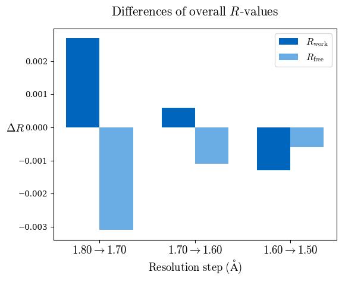
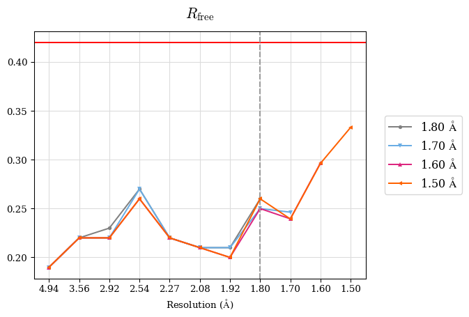
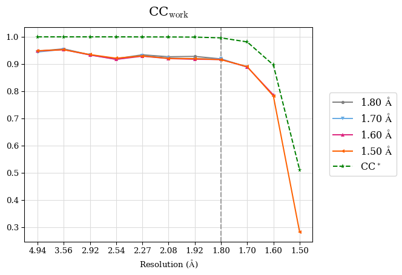

12. Paired refinement with PAIREF in CCP4Cloud¶
Written by: Martin Malý
In this tutorial, we submit a paired refinement job using the PAIREF program in CCP4Cloud. The paired refinement protocol investigates the impact of high-resolution data on the structure model quality.
We will use a data set from human glycosylated natural killer cell inhibitory receptor (NKR-P1), PDB entry 5MGR - courtesy of authors - Bláha, J., Skálová, T., Kalousková, B. et al., Nat. Commun. 13, 5022 (2022). https://doi.org/10.1038/s41467-022-32577-6
The structure of hNKR-P1-glyco (5MGR) was originally refined at 1.8 Å resolution - this high-resolution cutoff was determined using conventional criteria on diffraction data quality. Nevertheless, the diffraction data are processed up to 1.5 Å resolution. The structure and data are imported in this project. Thus, we will inspect the impact of the reflection beyond this high-resolution cutoff (from 1.8 Å to 1.5 Å) on the model quality. We will add three high-resolution shells step-by-step: 1.8-1.7 Å, 1.7-1.6 Å and 1.6-1.5 Å.
Right click on the last REFMAC5 job in the project and select ‘Add new job -> All tasks -> Refinement and Model Building -> Paired refinement with PAIREF’. In the new window, we need to specify:
How we want to add high-resolution shells - put 1.8,1.7,1.6,1.5 to Check given high-resolution shells.
Leave the default value in Start with 0 refinement cycles.
Put Make 10 refinement cycles on every iteration, that is enough for this particular data set.
In advance, put Overall data-geometry weight Fixed value 0.5 - from prior knowledge for this particular data set.
Now we are ready - press Run.
12.1. Results¶
Go to Output -> Pairef report to see the results. They should be very similar to the ones presented here but can slightly differ because of different versions of the software.
PAIREF refined the input structure model step-by-step using different high-resolution cutoffs. Firstly, go to the very bottom of the report to the section Statistics vs. cycle to check whether all the refinement runs converged. The R-values have to be stabilised in the last few refinement cycles. If not, the results would not be meaningful and paired refinement would need to be run using more refinement cycles. In this case, we can conclude that all the refinements have converged.
At the top of the report, an automatic algorithm suggests cutting data at 1.5 Å resolution - which is quite a difference in comparison with the previous choice at 1.8 Å resolution. Let’s check the following sections to understand the reasons for this decision.
Overall Rfree decreased for all three high-resolution shells up to 1.5 Å that denotes model improvement:
A perfect model gives an R-value of 0.42 against random data (i.e. pure noise) – assuming non-tNCS (translational non-crystallographic symmetry) data from a non-twinned crystal. Thus in the Rfree plot in the section ‘Model statistics - binned values’, we should check whether the binned Rfree values are lower than 0.42. This criterion is fulfilled for structure models refined at various resolutions in this case. Note that Rwork or Rfree higher than 0.42 in a high-resolution shell would indicate either the involvement of high-resolution data without information content (the data are even worse than noise), or poor quality of the model, or the presence of tNCS.
CC* is a model-independent measure of noise is in the diffraction data. CCwork/CCfree are correlation coefficients between observed and calculated intensities of reflections in work/freeR set. For this data set, CC* is higher than CCwork in the whole resolution range which means overfitting was not indicated. Note that to access overfitting, it is not needed to use a freeR set, so the comparison of CC* with CCwork is much better than with CCfree as CCwork is calculated using more reflections.
Thus, we can conclude that the high-resolution limit of the data is ca. 1.5 Å.
The report also includes merging statistics, it is worth checking them as well - e.g. completeness and CC1/2 are quite important.
#shell d_max d_min #obs #uniq mult. %comp <I> <I/sI> r_mrg r_meas r_pim r_anom cc1/2 cc_ano cc*
01 19.82 4.95 59124 1698 34.82 100.00 608.3 98.2 0.039 0.040 0.007 0.017 1.000 0.180 1.0000
02 4.94 3.56 103150 2727 37.83 100.00 647.6 103.3 0.036 0.037 0.006 0.013 1.000 0.083 1.0000
03 3.56 2.92 135451 3495 38.76 100.00 256.1 83.0 0.044 0.044 0.007 0.015 1.000 -0.005 1.0000
04 2.92 2.53 161502 4111 39.29 100.00 89.7 58.3 0.065 0.066 0.010 0.021 1.000 0.024 1.0000
05 2.53 2.27 178346 4523 39.43 100.00 44.6 40.2 0.098 0.099 0.016 0.031 0.999 0.002 0.9997
06 2.27 2.08 193407 4851 39.87 100.00 24.5 26.4 0.151 0.153 0.024 0.045 0.998 -0.045 0.9995
07 2.08 1.92 226351 5704 39.68 100.00 12.0 15.6 0.256 0.259 0.041 0.078 0.996 -0.044 0.9990
08 1.92 1.80 225846 5639 40.05 100.00 4.7 7.6 0.522 0.529 0.083 0.162 0.985 -0.025 0.9962
09 1.80 1.70 206154 6040 34.13 100.00 2.2 3.6 0.959 0.974 0.166 0.336 0.929 -0.028 0.9814
10 1.70 1.60 165795 7556 21.94 99.59 1.1 1.4 1.771 1.813 0.382 0.795 0.672 0.009 0.8966
11 1.60 1.50 82190 8453 9.72 86.59 0.5 0.4 3.189 3.372 1.031 1.569 0.150 -0.005 0.5108
If PAIREF did useful work for you, please cite us: M. Maly, K. Diederichs, J. Dohnalek, P. Kolenko (2020) IUCrJ 7:681-692, DOI: 10.1107/S2052252520005916
12.2. Data¶
You can download the used data using the following link: https://pairef.fjfi.cvut.cz/docs/PAIREF_tutorial_hnkrp1glyco.zip
It is also possible to run PAIREF in CCP4i2, using a standalone PAIREF graphical interface or in the command line. The job described here could be executed using the following command:
ccp4-python -m pairef --XYZIN NKRP1_1-80A_start.pdb --HKLIN XDS_ASCII_1_50A.mtz -u XDS_ASCII.HKL -i 1.8 -r 1.7,1.6,1.5 --ncyc 10 -w 0.5 -p hnkrp1glyco
More information about PAIREF settings and possibilities are explained in the documentation.
12.3. Further reading¶
Linking crystallographic model and data quality. P.A. Karplus & K. Diederichs (2012) Science 336:1030–3
Assessing and maximizing data quality in macromolecular crystallography. P.A. Karplus & K. Diederichs (2015) Cur. Op. in Str. Biology 34:60–68
Better models by discarding data? P.A. Karplus & K. Diederichs (2013) Acta Cryst. D59:1215–1222